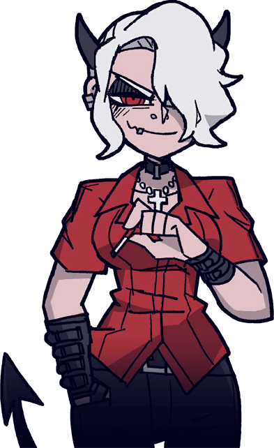

<!DOCTYPE html>
<html lang="en">

<head>
    <meta charset="UTF-8">
    <meta name="viewport" content="width=device-width, initial-scale=1.0">
    <link href="https://fonts.googleapis.com/css2?family=Crimson+Pro:wght@700&display=swap" rel="stylesheet">
    <title>Zdrada</title>
    <link rel="stylesheet" href="css/reset.css">
    <link rel="stylesheet" href="css/styleforchar.css">
</head>

<body>
    <div class="wrapper">
        <header>
            <div class="head">
            </div>
        </header>
        <div class="body">
            <div class="container">
                <div class="content">
                    
                    <div class="image Z">
                        
                    </div>
                    <div class="char__door">
                        <a href="hub.html">
                            
                        </a>
                    </div>
                </div>
            </div>
        </div>
        <footer>
            <div class="foot">
                <div class="text__bars">
                    <div class="name">
                        <div class="title__text">
                            <p class="dot">•</p>
                            <p>Zdrada, The Naughty Demon</p>
                            <p class="dot">•</p>
                        </div>
                    </div>
                    <div class="info__block">
                        <div class="quote__block">
                            <p class="quote">"Yo. I've heard about your harem. I'm in."</p>
                        </div>
                        <div class="text__block">
                            <div class="text__block__top Z__text">
                                <p>Zdrada, like most of the Helltaker cast, is depicted as a short demon girl with pale skin, red irises, a black arrow-tipped tail, and silvery-white hair. It's quite short and most of it covers her left eye. Poking out of
                                    her hair are two small black horns that are rounded inwards. She has black eye shadow along with piercings on her mouth, ears and nose
                                </p>
                                <p> On her arms you can see sorts of black bracelets, one of them reaching to her fingers. In addition to her white cross necklace, which is a clear reference to her name, she also wears a choker. Her base attire consists of
                                    a red tuckered shirt, black skinny jeans and black, knee-length heeled boots.Zdrada is shown to be a mean-spirited smoker and rarely cares for anything, and is very dorkish as her label implies. She dislikes solving
                                    problems, nerdy puzzles and Malina's video games. She seems to always be smoking, and she doesn't care even if it is forbidden.
                                </p>
                            </div>
                            <div class="image__text Z__text__img">
                                
                            </div>
                        </div>
                    </div>
                </div>
            </div>
        </footer>
    </div>
</body>

</html>